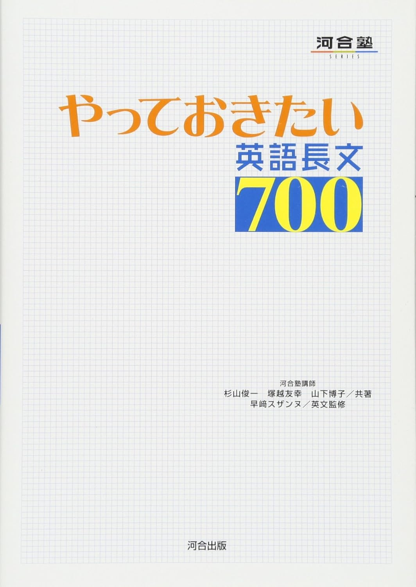

1. グローバル化 [同志社大]
p.56–64
▶
4. 高齢化社会 [早稲田大]
p.84–91
▶
5. インターネット [旭川医科大]
p.92–101
▶
6. 言語の遍在性 [明治大]
p.102–111
▶
7. 英語の将来 [明治学院大]
p.112–122
▶
8. イランでの旅 [東京大]
p.123–134
▶
9. 文化と社会 [同志社大]
p.135–144
▶
10. 環境と経済 [大阪大]
p.145–154
▶
11. 太陽エネルギー [佐賀大]
p.155–164
▶
12. 地球温暖化 [青山学院大]
p.165–173
▶
13. 遺伝子 [青山学院大]
p.174–184
▶
15. 20世紀最大の発見 [千葉大]
p.194–204
▶